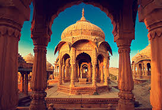
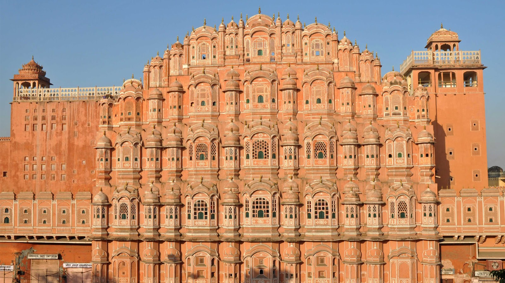
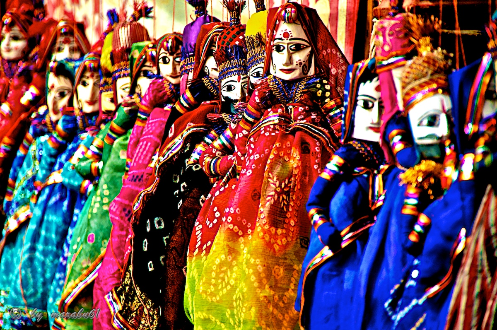
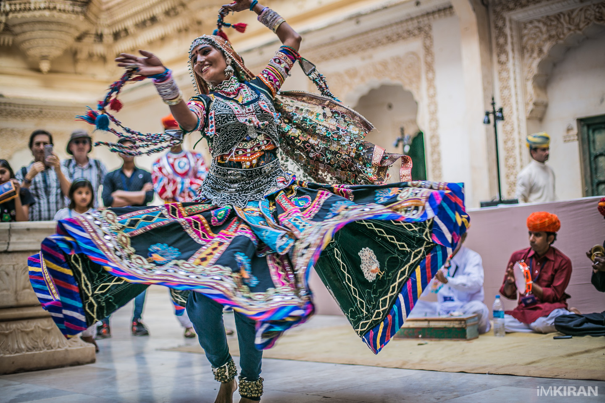

Rajasthan, meaning “The Abode of the Rajas,” was formerly called Rajputana, “The Country of the Rajputs” (sons of rajas [princes])Rajasthan has a wide range of climate that varies from extremely arid to humid. The humid zone spans the southeast and east. Except in the hills, the heat during the summer is intense everywhere, with temperatures in June—the warmest month—typically rising from the mid-80s F (about 30 °C) to nearly 110 °F (low 40s C) daily. Hot winds and dust storms occur in the summer, especially in the desert tract. In January—the coolest of the winter months—daily maximum temperatures range from the upper 60s to the mid-70s F (low to mid-20s C), while minimum temperatures are generally in the mid-40s F (about 7 °C). The western desert has little rain, averaging about 4 inches (100 mm) annually. In the southeast, however, some areas may receive almost 20 inches (500 mm).
The typical dance of Rajasthan is the ghoomar, which is performed on festive occasions by only women. Other well-known dances include the geer, which is performed by men and women; the panihari, a graceful dance for women; and the kacchi ghori, in which male dancers ride dummy horses. Performances of khyal, a type of dance-drama composed in verse with celebratory, historical, or romantic themes, is also widely popular. Important festival, held at Pushkar near Ajmer, takes the form of a mixed religious festival and livestock fair; Hindu pilgrims come seeking salvation during the celebration, while farmers from all corners of the state bring their camels and cattle to show and sell. The tomb of the Sufi mystic Khwajah Mu?in al-Din Chishti at Ajmer is one of the most-sacred Muslim shrines in India. Hundreds of thousands of pilgrims, many from foreign countries, visit the shrine each year on the occasion of the saint’s ?urs (death anniversary).